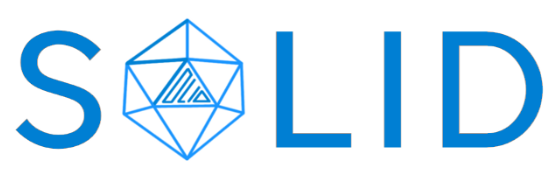
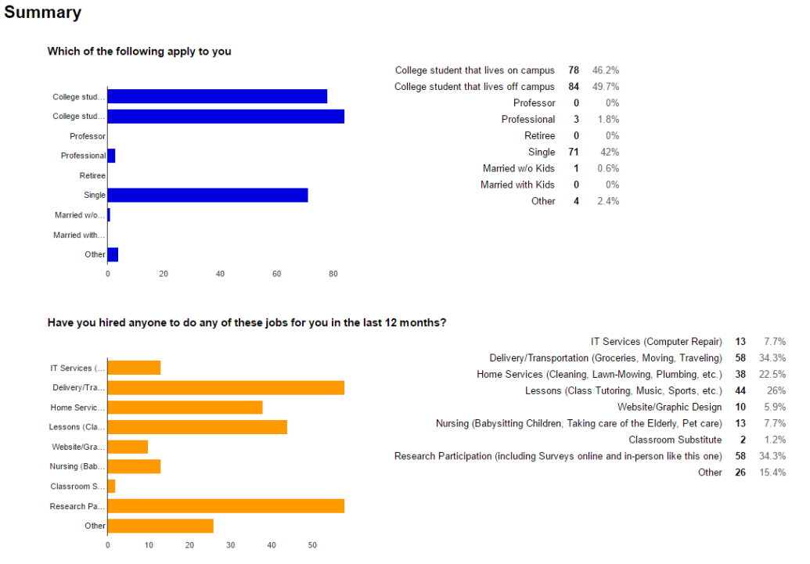
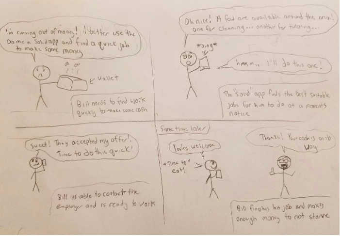
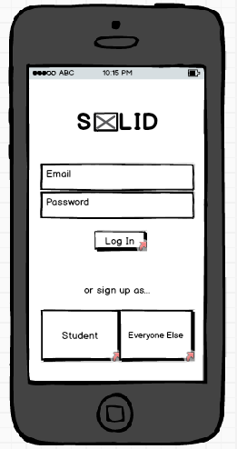
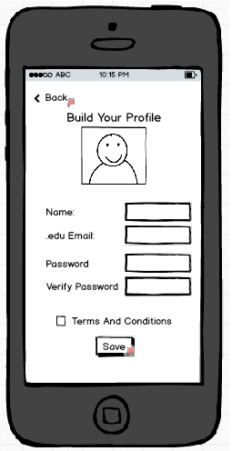
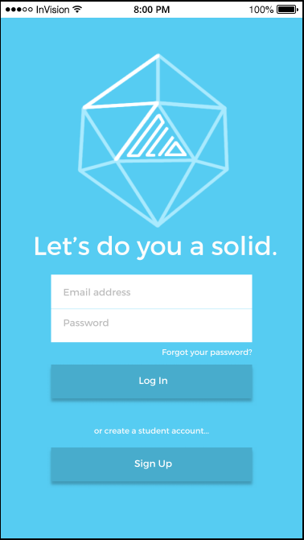
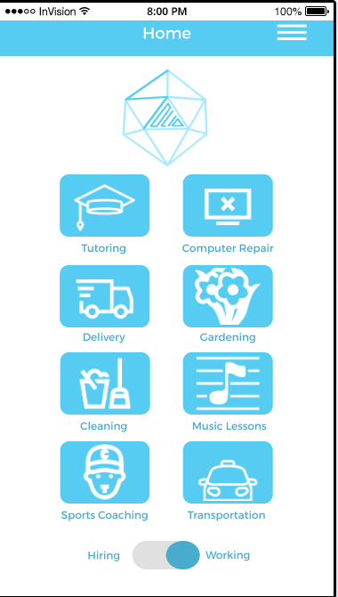

Introduction
Solid is an app that allows university students to support each other as a community by providing or taking up jobs or tasks that other students need to get done, but dont have time for.
Solid started out as a simple class project for COGS 187a but grew into something more. Our team worked for many hours almost every day for the last month to bring out the potential that we saw within this app
On this page, i have listed the significant details that made Solid potentially the next big app idea
Week 1: Discovering an idea
When we started out, we had no cohesive plan on what we wanted to do for the class. Originally, we planned on a sort of "skill exchanging" app which would match people who wanted something done that they could not do, but instead of paying cash, they would either do something for the other person instead. This was essentially a favor-for-favor type of application.

Eventually, after some brainstorming we converged into the begginings of SOLID. We had alot of fun deciding what logo we wanted to make for the app that represents what theme we were going for, as shown in the pic. Soon after was when the real work began.
Week 2: Searching for Solutions
Now that we had out idea, we needed to find out how we could start designing this app to fit the needs of our target users. To try to find answers, we sent out a survey to potential users, university students, to find out what they thought of our app. Some of these questions include:
- If you have hired anyone to do odd jobs in the past, what was your experience?
- Would you hire a college student to complete any odd jobs you need to get done?
- Are you a UCSD student interested in doing odd jobs over the school year for petty cash?

With over a hundred results, we compiled a significant amount of feedback that showed us that there are a sizeable amount of students who are in need of jobs or have asked for jobs to be done. Each team member additionally had gone to interview students directly. We concluded that many students agree that they have odd jobs that they would be willing to do for cash as long as the work was convinient for them and credible. We also weighed in on potential competitors such as TaskRabbit, Agent Anything, or our very own UCSD Free and For Sale.
Our research led us to mold Solid into an app that includes all the good features of our competiters as well as additional ones that they lacked.
Week 3: Painting the Picture
With our app idea rolling and the needfinding more or less fulfilled, we moved on to constructing scenarios that we foresaw users undertaking with our app. We created personas based on the different kinds of students that could possibly use our app, such as on/off campus students as well as old or young students. From the personas we proceeded to make the storyboards of our users. Here is an example:

Our storyboards focused on various problems that students could have and how our app can take measures to provide a solution. Our next step after storyboarding was building an actual prototype.
Week 4: Building the Solution
Now that we had made all our plans, it was time to implement the actual visual design of the app. We used the Balsamiq tool online to create a low-fi prototype of our app. It was quite a struggle as we had many pages we wanted to include to keep the consistency of our app. After many painstaking hours we finally were able to create a full blown mockup of what we wanted our app to look like.
 
The low-fi prototypes gave us the visual sense of how the app would end up becoming as well as providing us different directions as to how we could improve and fine tune our features. Now we could finalize our plans and prepare for the final presentation and the "Shark Tank"
Final Week Solidifying our App
Now that everything was in place, it was time for us to make the final adjustments to our app design and create a hi-fi prototype. We used the tools Figma and Invision to create and link our robust prototypes. Crafting the colorful mockup pages were a bit of a challenge but with our ideas and plans set in mind from our low-fi prototypes we managed to make quick work of most of the pages.
 
With our prototype finalized we swiftly prepared the final presentation and created a demo. And with that we were ready to present the final design of our app.
Conclusion Future of Solid
Now that the design of the app has been made and the Shark Tank presentation already underwent, the future of Solid is still looking ahead.
Team Do Me A Solid continurs to plan on fully implementing our app someday to explore what new heights we can acheive in the near future.